Corazón de Madrid y punto de encuentro por excelencia. Aquí se encuentra el famoso Kilómetro Cero, origen de todas las carreteras radiales de España, y el icónico reloj que marca las campanadas de Nochevieja. (Encontrarás la famosa estatua del oso y el madroño).
 CÓMO LLEGAR
CÓMO LLEGAR
Plaza histórica de elegante arquitectura porticada, escenario de mercados, celebraciones y eventos desde el siglo XVII. Rodeada de terrazas donde disfrutar de un café o un tradicional bocadillo de calamares.
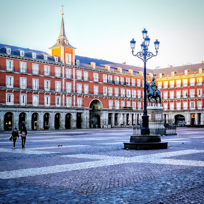 CÓMO LLEGARResidencia oficial de la monarquía española, aunque hoy en día se usa para ceremonias de Estado. Impresiona por su arquitectura barroca y sus lujosos interiores, con vistas privilegiadas a los Jardines de Sabatini y Campo del Moro.
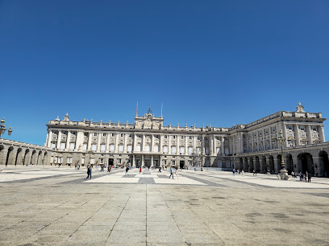 CÓMO LLEGARFrente al Palacio Real, combina estilos neoclásico y neogótico, con una impresionante cripta y vistas desde su cúpula.
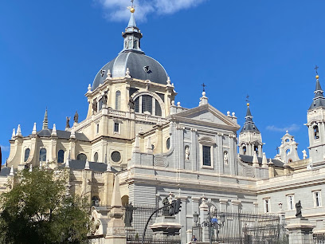 CÓMO LLEGAREntre el Banco de España y el Palacio de Correos se encuentra la diosa romana con los leones, cuya fuente fue realizada en 1782. Bajo ella se encuentra la cámara acorazada del Banco de España, que está forma parte de un mecanismo de seguridad único.
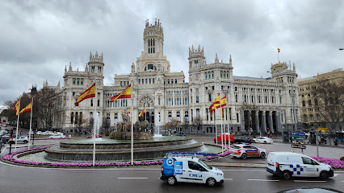 CÓMO LLEGAREmblemático edificio de la Gran Vía, inaugurado en 1911 con una elegante fachada de estilo francés. Su cúpula negra decorada con hojas de oro y la estatua que la corona lo convierten en uno de los iconos arquitectónicos más fotografiados de Madrid.
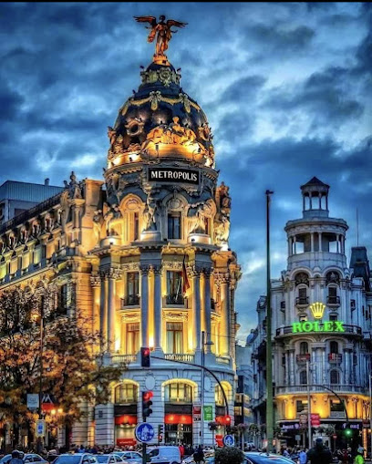 CÓMO LLEGARInaugurada en 1778, esta era una de las antiguas 5 puertas reales que daban acceso a la ciudad de Madrid. La cual se encuentra frente al Parque de El Retiro.
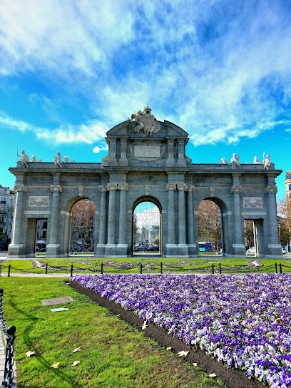 CÓMO LLEGARJardín histórico del siglo XVII en el centro de Madrid, con paseos arbolados, estanque, Palacio de Cristal y rincones artísticos.
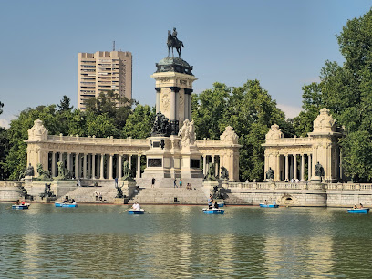 CÓMO LLEGARMonumento neoclásico del siglo XVIII situado en el Paseo del Prado. Representa al dios del mar con su tridente sobre un carro tirado por caballos marinos, rodeado de delfines y focas. Es uno de los símbolos de Madrid y punto de celebración de los aficionados del Atlético de Madrid.
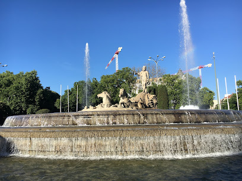 CÓMO LLEGARHistórico bulevar arbolado que conecta algunos de los museos y monumentos más importantes de Madrid, como el Prado, el Thyssen-Bornemisza y el Reina Sofía. Declarado Patrimonio Mundial por la UNESCO, combina cultura, jardines y fuentes emblemáticas como la de Cibeles y Neptuno.
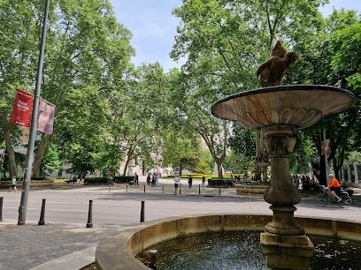 CÓMO LLEGARConsiderado una de las pinacotecas más importantes del mundo, alberga obras maestras del arte europeo, con especial énfasis en pintores españoles como Velázquez, Goya y El Greco.
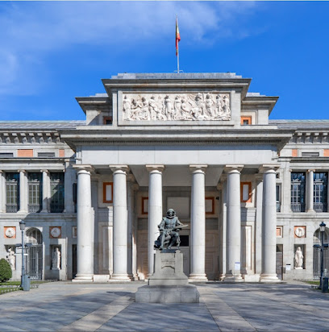 CÓMO LLEGARCentro de arte contemporáneo y moderno, famoso por acoger el Guernica de Picasso, así como obras de Dalí, Miró y otros grandes artistas españoles del siglo XX.
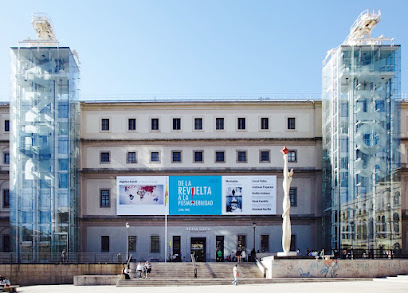 CÓMO LLEGARMuseo que completa el “Triángulo del Arte” madrileño, con una colección que abarca desde el Renacimiento hasta el arte moderno, incluyendo pintura europea de maestros como Caravaggio, Rubens y Van Gogh.
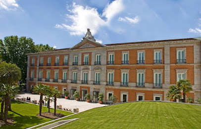 CÓMO LLEGAR